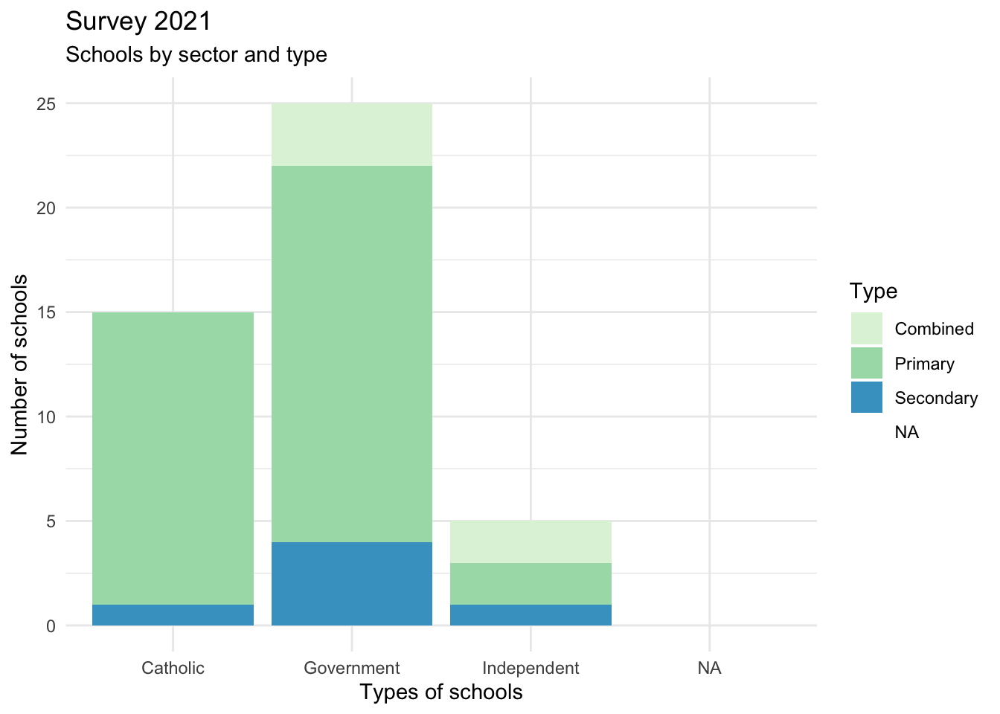
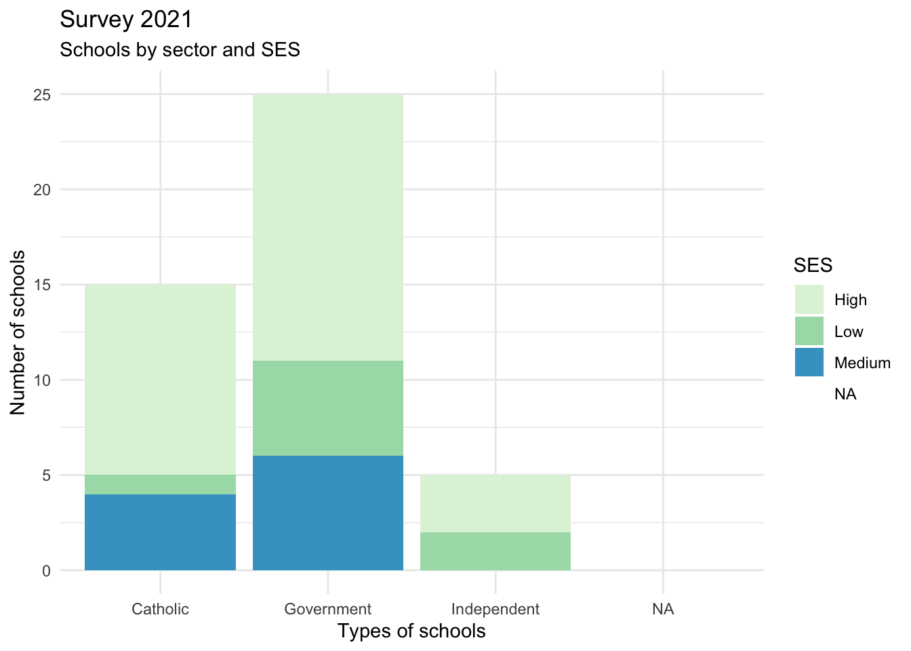

Sample report: school survey data 2021
Contents
Contents
List of Tables
Acknowledgements
Executive Summary
Background
Aim
Methodology
Demographics of schools participating in the self-assessment tool: 2021 & 2022


Results
data%>%
group_by(Sector)%>%
summarise(average_n=mean(total5),
average_npc=mean(total_pc))%>%
knitr::kable(caption="Effective school organisation")| Sector | average_n | average_npc |
|---|---|---|
| Catholic | 4.20 | 0.840 |
| Government | 3.64 | 0.728 |
| Independent | 4.00 | 0.800 |
| NA | NA | NA |